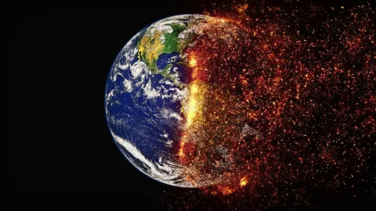
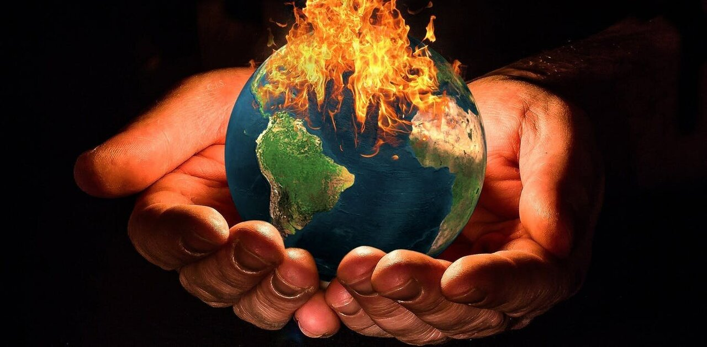

Aquecimento global é o processo de aumento da temperatura média dos oceanos e da atmosfera da Terra causado por massivas emissões de gases que intensificam o efeito estufa, originados de uma série de atividades humanas, especialmente a queima de combustiveis fosseis e mudanças no uso da terra, como o desmatamento, bem como de várias outras fontes secundárias.
Essas causas são um produto direto da explosão populacional, do crescimento econômico, do uso de tecnologias e fontes de energias poluidoras e de um estilo de vida insustentável, em que a natureza é vista como matéria-prima para exploração. Os principais gases do efeito estufa emitidos pelo homem são o dióxido de carbono (ou gás carbônico, CO2) e o metano (CH4).
